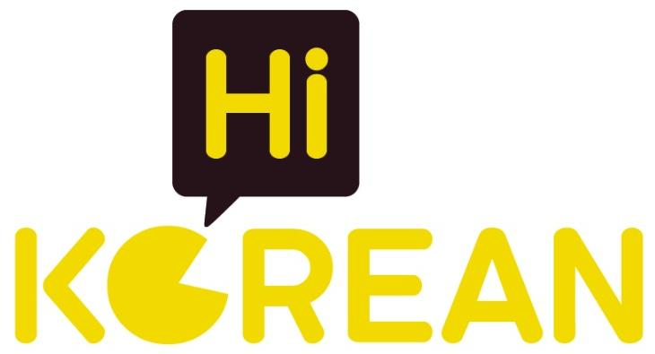

Nền kem, vàng ấm và nâu đậm lấy từ PowerPoint chị cung cấp. Mỗi màn hình tập trung vào một bước.
Kiểm tra form, khảo sát, mở khóa tuần tự, quay lại, lưu tiến độ trên trình duyệt, phát video, ẩn/hiện lời và đáp án, sao chép prompt, liên kết Zalo.
Mở khóa theo tiến độ là hành vi của bản mẫu trên thiết bị, không phải cơ chế bảo vệ nội dung.
Bạn đã sẵn sàng thay đổi cách học tiếng Hàn của mình.
Với cẩm nang “BẬT CHẾ ĐỘ GIAO TIẾP TIẾNG HÀN”, hãy khám phá cách luyện nghe, nói và kích hoạt phản xạ để những gì bạn đã học thực sự được sử dụng trong giao tiếp.
Đừng chỉ học để biết. Hãy luyện để nói được!
👉 Nhấn nút bên dưới để nhận cẩm nang của bạn.
Xóa thông tin thử và tiến độ của bản mẫu trên trình duyệt này.